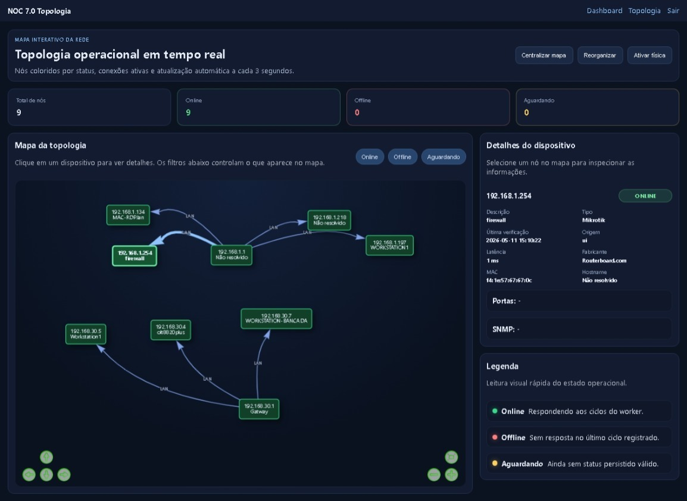
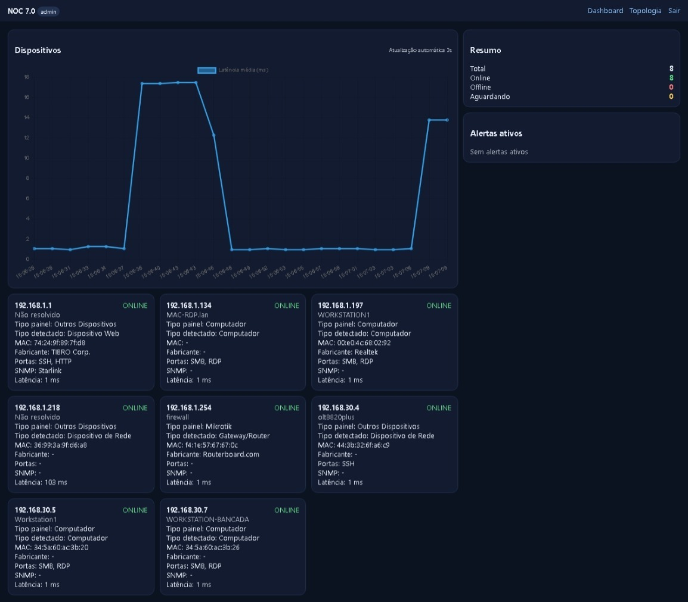
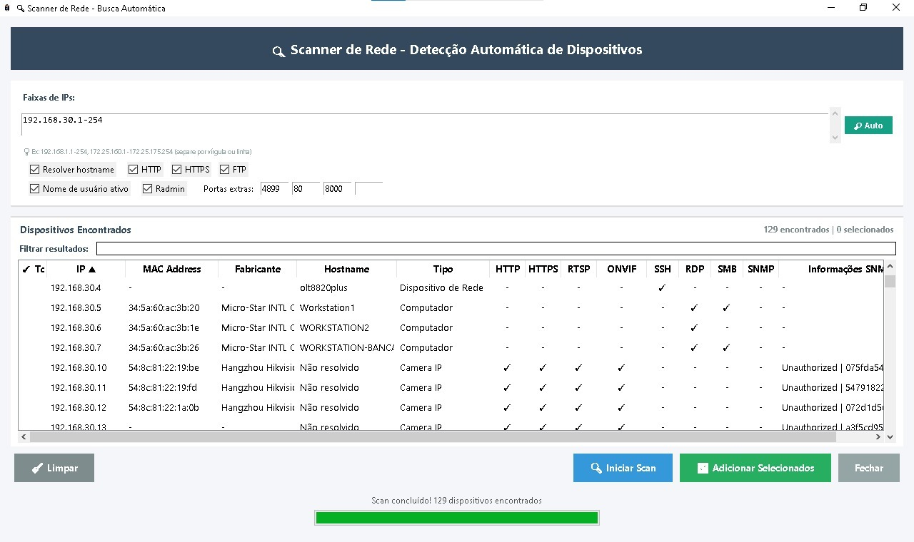
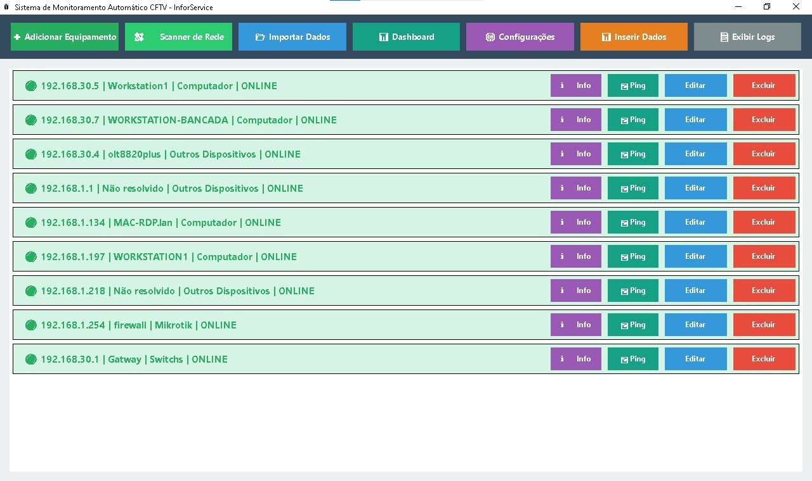
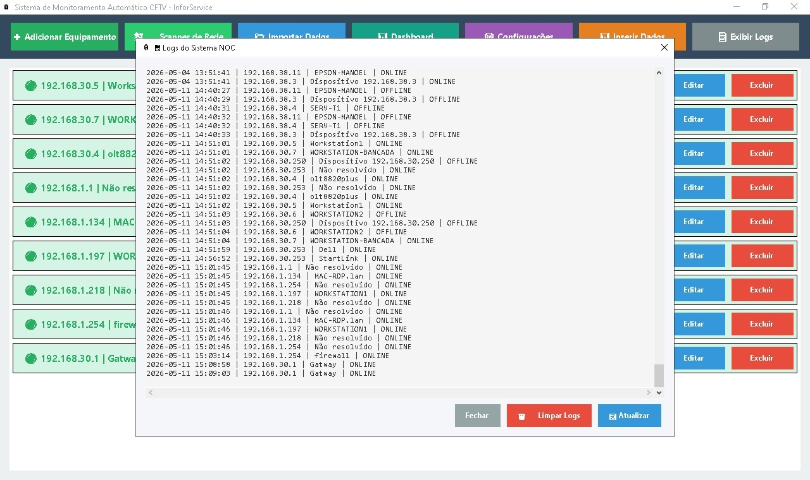

512
endereços IP (/23) entre redes e sub-redes em uma única varredura.
O Software NOC da InforService centraliza o monitoramento de servidores, redes, links, câmeras, controle de acesso e aplicações em uma única central de operações — com alertas inteligentes, gestão de incidentes e resposta proativa para garantir a máxima disponibilidade do seu ambiente.
O dashboard do Sistema NOC reúne em tempo real o status de todos os ativos monitorados — servidores, switches, links de internet, câmeras e controle de acesso — com indicadores de disponibilidade e alertas classificados por criticidade.
Nossa Central de Operações de Rede (NOC) monitora 24 horas por dia, 7 dias por semana, todos os ativos do seu ambiente: servidores, switches, links de internet, câmeras, controles de acesso e aplicações — com alertas inteligentes e resposta proativa a incidentes.
Dashboards em tempo real, relatórios de disponibilidade e escalonamento automático garantem que nada passe despercebido na sua operação, reduzindo o tempo de parada e aumentando a previsibilidade do negócio.

Telas reais da plataforma utilizada pela InforService para monitorar, mapear e auditar a infraestrutura dos nossos clientes.
endereços IP (/23) entre redes e sub-redes em uma única varredura.
intervalo de atualização do dashboard e da topologia em tempo real.
visibilidade contínua de servidores, redes, câmeras e acessos.
dos eventos online/offline registrados para auditoria e SLA.
O dashboard reúne em uma única tela tudo o que importa: total de dispositivos monitorados, quantos estão online, offline ou aguardando verificação, gráfico de latência média em tempo real e a lista de alertas ativos — sem precisar abrir múltiplos sistemas.
Cada dispositivo aparece em um card com IP, hostname, MAC, fabricante, portas abertas, status SNMP e latência atual, permitindo identificar problemas antes que afetem a operação.

A topologia interativa desenha automaticamente as conexões entre os dispositivos da rede, com nós coloridos por status: verde para online, vermelho para offline e amarelo para aguardando verificação.
Basta clicar em qualquer nó para abrir o painel de detalhes — descrição, tipo, fabricante, hostname, latência e portas — facilitando o diagnóstico visual de toda a infraestrutura em segundos.

O scanner varre faixas de IP configuráveis — de redes /24 a /23, cobrindo até 512 endereços entre múltiplas redes e sub-redes em uma única varredura — e identifica automaticamente cada dispositivo conectado: computadores, câmeras IP, switches, roteadores e outros equipamentos, sem necessidade de cadastro manual.
Para cada dispositivo encontrado, o sistema reconhece endereço MAC, fabricante, hostname e os protocolos disponíveis (HTTP, HTTPS, RTSP, ONVIF, SSH, RDP, SMB, SNMP). No exemplo ao lado, 129 dispositivos foram identificados automaticamente em poucos segundos, prontos para serem adicionados ao monitoramento com um clique.

Todos os dispositivos monitorados ficam organizados em uma lista única, com status em tempo real (online/offline), tipo de equipamento e ações rápidas de Info, Ping, Editar e Excluir.
A equipe técnica consegue testar a conectividade, revisar informações e ajustar o monitoramento de qualquer ativo sem sair da tela principal — agilizando o atendimento e a resolução de problemas.

Cada mudança de status — de online para offline e vice-versa — fica registrada com data, hora, IP e nome do dispositivo, criando uma trilha de auditoria completa da disponibilidade da sua rede.
Esse histórico é a base para identificar quedas recorrentes, medir o tempo de indisponibilidade de cada equipamento e embasar relatórios de SLA com dados reais.

Da identificação do alerta à resolução do incidente, cada etapa é estruturada para reduzir o impacto na sua operação.
O NOC acompanha continuamente todos os ativos monitorados, identificando alertas e comportamentos fora do padrão.
Anomalias, quedas de link, falhas de equipamento e degradação de performance são identificadas em tempo real.
Notificações automáticas por e-mail, SMS e WhatsApp são enviadas com classificação de criticidade e escalonamento.
A equipe técnica atua na correção e a operação recebe relatórios de disponibilidade, uptime e tendências.
Visão centralizada de todas as unidades via NOC, com VPN entre filiais, monitoramento e priorização técnica por criticidade.
Monitoramento de PDV, rede, internet, CFTV e sistemas que não podem parar durante o horário de funcionamento.
Monitoramento de redes, controle de acesso, CFTV e sistemas de automação em ambientes industriais.
Monitoramento de redes FTTH, OLT e ativos de rede para provedores regionais e locais.
Sim. O Sistema NOC opera 24/7 com alertas automáticos, dashboards em tempo real e escalonamento rápido de incidentes. Nossa equipe recebe e trata os alertas para garantir máxima disponibilidade.
Servidores, switches, roteadores, links de internet, câmeras IP, controles de acesso e aplicações — qualquer ativo com endereço de rede pode ser incluído no monitoramento.
Os alertas são classificados por criticidade (normal, atenção e crítico) e enviados automaticamente por e-mail, SMS e WhatsApp, com escalonamento para a equipe técnica responsável.
Sim. O NOC foi projetado para operações multisite, oferecendo visão centralizada de todas as filiais em um único painel, com priorização técnica por criticidade.
Sim. O sistema gera relatórios periódicos de disponibilidade, uptime e análise de tendências, apoiando o planejamento preventivo da sua infraestrutura.